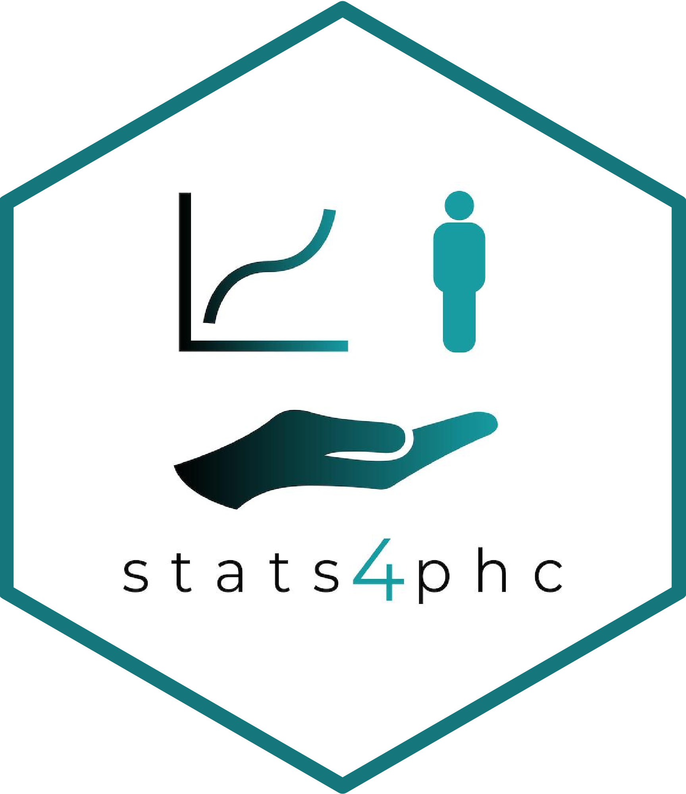

GAM Risk Estimates
getGAMest.RdFits a Generalized Additive Model to estimate risk, given a vector of binary outcome, and a vector of scores.
Usage
getGAMest(
outcome,
score,
k = -1,
bs = "tp",
method = "REML",
logscores = FALSE,
fitonPerc = TRUE
)Arguments
- outcome
Vector of binary outcome for each observation.
- score
Numeric vector of continuous predicted risk score.
- k
Numeric to specify the upper limit of basis functions to fit for GAM. See
mgcv::s()for more details. Defaults to -1.- bs
Character string to specify spline type. See
mgcv::s()for more details. Defaults to"tp".- method
Character string to specify method type. See
mgcv::s()for more details. Defaults to "REML".- logscores
Logical; if
TRUE, fit gam on log scores. Defaults toFALSE.- fitonPerc
Logical; if
TRUE, fit gam on risk percentiles. Defaults toTRUE.
Examples
# Read in example data
auroc <- read.csv(system.file("extdata", "sample.csv", package = "stats4phc"))
rscore <- auroc$predicted
truth <- as.numeric(auroc$actual)
tail(getGAMest(outcome = truth, score = rscore), 10)
#> score percentile outcome estimate
#> 324 0.3472267 0.81081081 0 0.45508813
#> 325 0.2940563 0.63063063 0 0.32083905
#> 326 0.2956584 0.63963964 0 0.32707834
#> 327 0.3173334 0.70870871 0 0.37683329
#> 328 0.1957009 0.21621622 0 0.11300295
#> 329 0.2909602 0.61561562 0 0.31058179
#> 330 0.1466197 0.03603604 0 0.06721966
#> 331 0.2335213 0.40240240 0 0.18669186
#> 332 0.1310011 0.01201201 0 0.06261003
#> 333 0.3696760 0.85885886 0 0.49295297